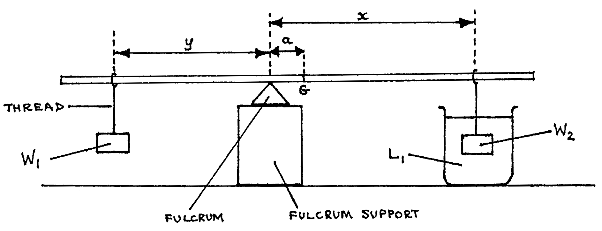

85-Q1: Relative Density of a Liquid¶
Time: \(1 \frac{1}{2}\) hr.
Apparatus¶
Metre rule; thread (\(\approx 50\text{cm}\).; fulcrum (eg. prism); fulcrum support (height \(\approx\) \(10\text{cm}\); \(L_1\) \(200\text{ml}\) water in \(250\text{m}\) beaker; \(L_2\) \(200\text{ml}\) motor oil (or kerosene) in \(250\text{ml}\) beaker; \(W_1\) \(50\text{g}\) mass (metal); \(W_2\) \(20\text{g}\) mass (plastic or rubber); piece of chalk; 2 sheets graph paper.
In this experiment you are required to determine the density of liquid \(L_2\) relative to that of liquid \(L_1\), and find the mass \(M\) of the metre rule provided. Proceed as follows:
- Locate and mark the centre of gravity \(G\) of the metre rule.
- Set up the apparatus as illustrated below, where \(a = 5\)cm, and \(W_1\) and \(W2\) are masses of \(50\text{g}\) and 20g respectively.

- With \(W_2\) totally immersed in liquid \(L_1\) and \(x = 10\text{cm}\), balance the metre rule by adjusting the position of \(W_1\). Read and record distance \(y\). Repeat the process for \(X = 20\text{cm}, 30\text{cm}, 40\text{cm}, 50\text{cm}, \text{ and } 54\text{cm}\). Tabulate the values of \(x\) and \(y\). (7 marks)
- Replace liquid \(L_1\) by liquid \(L_2\) and then repeat the procedure outlined in (c) above. (7 marks)
- Plot a graph of \(y\) vs. \(x\) using the table obtained in (c): (8 marks)
- Read and record \(I\), the value of \(y\) when
\(x = 0\). Calculate \(10 \times I\), which is equal to the
mass of the metre rule. (4 marks)
- Find the slope \(S_1\) of the graph. (4 marks)
- Find the value of \(\lambda _1\) given that \(\lambda_1 = 0.4 - S_1\). (2 marks)
- Plot a graph of \(y\) against \(x\) using the table obtained in (d). (8 marks)
- Find the slope \(S_2\) of this graph. (4 marks)
- Find the value of \(\lambda _2\) given that \(\lambda _2 = 0.4 - S_2\). (2 marks)
- Evaluate the ratio \(\frac{\lambda _2}{\lambda _1}\), which is equal te the density of liquid \(L_2\) relative to that of liquid \(L_1\). (4 marks)